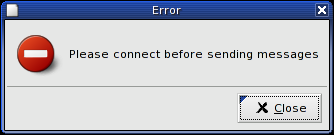

Gtk provides a message box containing a small image used for describing the message type and then a small message.
For example, to create and display a error dialog:
error = gtk.MessageDialog(self.window, gtk.DIALOG_MODAL | gtk.DIALOG_DESTROY_WITH_PARENT, gtk.MESSAGE_ERROR, gtk.BUTTONS_CLOSE, "Please connect before sending messages") error.run() error.destroy()
This is the resulting dialog:
